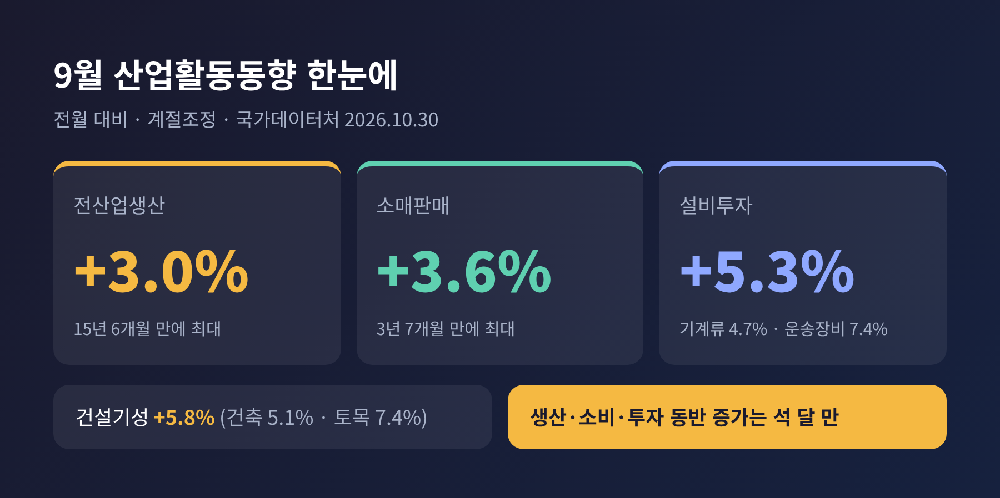
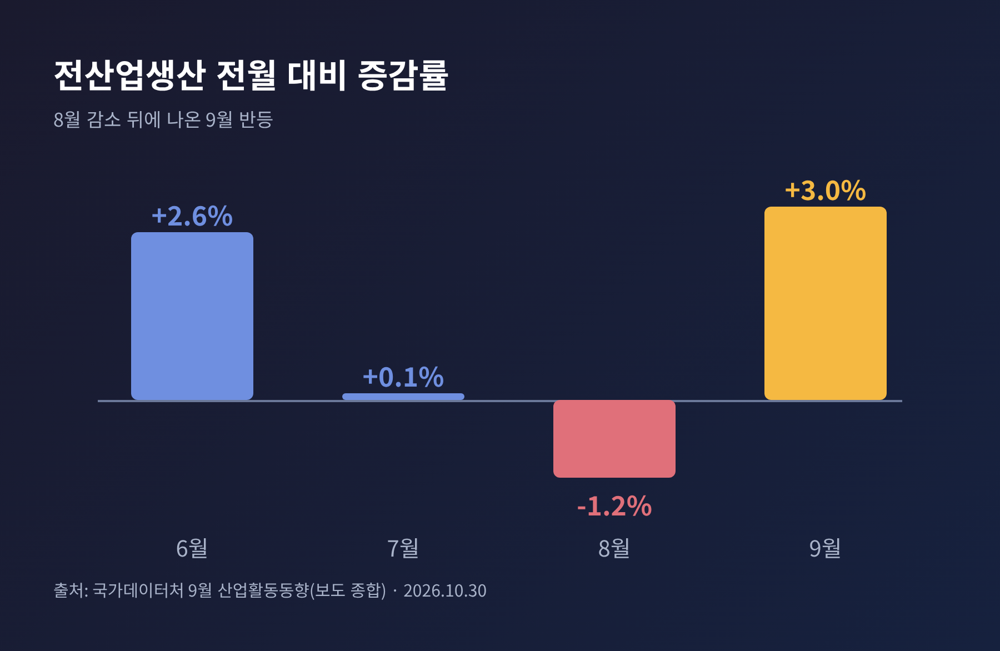
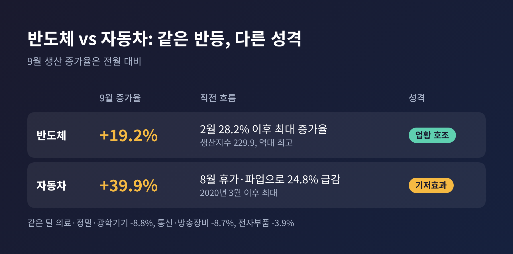
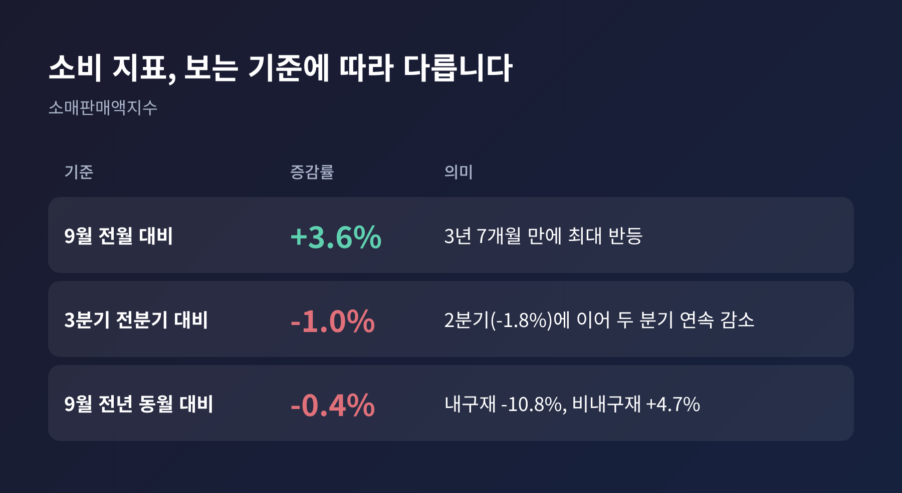

9월 산업활동동향 생산 3.0% 증가, 반도체·자동차 반등과 기저효과

3줄 요약 - 2026년 10월 30일 국가데이터처가 발표한 9월 산업활동동향에서 생산 3.0%, 소비 3.6%, 투자 5.3%가 모두 늘었습니다. - 전산업생산 증가폭은 2011년 3월 이후 15년 6개월 만에 가장 컸지만, 8월 부진의 기저효과와 반도체 쏠림이 겹쳐 있습니다. - 소비는 분기 기준으로 여전히 감소세여서, 이번 반등을 추세로 읽기에는 이르다는 평가가 나옵니다.
이번 글에서는 9월 산업활동동향을 정리해 보려 합니다. 숫자가 화려한 만큼 무엇이 진짜 회복이고 무엇이 반작용인지 나누어 보겠습니다. 10월 27일에 나온 3분기 GDP 속보치와는 어떤 관계인지도 짚습니다.
■ 무슨 일이 있었나: 석 달 만의 '트리플 증가'
국가데이터처는 10월 30일 9월 산업활동동향을 발표했습니다. 모든 수치는 계절조정을 거친 전월 대비 기준입니다.
전산업생산은 3.0% 늘었습니다. 지수는 122.7(2020년=100)입니다. 2011년 3월의 3.4% 이후 가장 큰 증가폭입니다. 소매판매는 3.6% 늘어 2023년 2월(5.1%) 이후 3년 7개월 만에 가장 크게 올랐습니다. 설비투자는 5.3% 증가했습니다. 생산·소비·투자가 함께 늘어난 것은 6월 이후 석 달 만입니다.
건설기성도 5.8% 늘었습니다. 건축이 5.1%, 토목이 7.4% 증가했고, 반도체 공장과 데이터센터 같은 비주거용 건축이 힘을 보탰습니다.

■ 왜 중요한가: 기록적 숫자, 그러나 출발점이 낮았다
예전엔 석 달 연속 부진을 걱정했습니다. 지금은 15년 만의 반등이라는 제목이 나옵니다. 다만 직전 흐름을 보면 해석이 달라집니다.
전산업생산은 6월 2.6%, 7월 0.1%였고 8월에는 1.2% 감소했습니다. 9월의 3.0%는 이 감소분 위에서 나온 반등입니다. 광공업생산은 9.0% 늘어 2009년 2월 이후 17년 7개월 만의 최대폭을 기록했고, 제조업생산도 9.9% 늘었습니다. 제조업 평균가동률은 8월 71.2%에서 76.8%로 올랐습니다.
숫자의 크기만큼 중요한 것은 구성입니다. 이 반등을 끌어올린 두 축이 반도체와 자동차이기 때문입니다.

■ 기저효과: 자동차는 떨어졌다 돌아온 것입니다
자동차 생산은 9월에 39.9% 늘었습니다. 2020년 3월 이후 가장 큰 증가율입니다. 그런데 8월에는 하계휴가와 일부 업체의 파업으로 24.8% 급감했습니다. 파업이 끝나고 공장이 정상 가동되면서 되돌아온 몫이 큽니다.
소매판매에서도 같은 장면이 보입니다. 승용차 판매는 8월 13.3% 감소에서 9월 18.3% 증가로 돌아섰습니다. 국가데이터처의 이두원 경제동향통계심의관은 소매판매 증가의 가장 큰 원인으로 자동차 판매 회복을 꼽았습니다. 설비투자 중 운송장비 7.4% 증가도 완성차 생산 차질이 풀린 영향입니다.
여기서 구분이 필요합니다. 전월 대비 큰 증가율은 낮은 기준점에서 출발한 결과일 수 있습니다. 이 부분은 새로 늘어난 수요라기보다 미뤄졌던 생산과 판매가 돌아온 것으로 보는 편이 안전합니다.
■ 반도체 쏠림: 기록은 진짜지만 기댈 곳이 좁습니다
반도체 생산은 19.2% 늘었습니다. D램과 플래시 등 메모리 생산이 늘었고, 올해 2월의 28.2% 이후 가장 높은 증가율입니다. 반도체 생산지수는 229.9로 1980년 1월 통계 작성 이후 최고치입니다. 심의관은 메모리 수요가 이어지고 있다고 설명했습니다.
자동차와 달리 이쪽은 기저효과만으로 설명되지 않습니다. 업황 자체가 좋다는 뜻입니다.
다만 아쉬운 점도 있습니다. 같은 달 의료·정밀·광학기기는 8.8%, 통신·방송장비는 8.7%, 전자부품은 3.9% 감소했습니다. 반도체 재고도 7.4% 늘었습니다. 한 업종이 지표 전체를 끌어올리는 구조에서는, 그 업종의 사이클이 꺾일 때 충격도 함께 커집니다. 회복이 내수와 건설 등으로 퍼지는지가 앞으로의 변수라는 지적이 나오는 이유입니다.

■ 소비: 한 달 반등과 분기 감소 사이
소매판매 3.6% 증가는 내구재 4.4%, 비내구재 4.2%, 준내구재 0.6%로 모든 품목군이 늘었다는 점에서 의미가 있습니다. 추석 명절 수요와 대형마트 할인행사가 음식료품 판매를 밀어 올렸고, 서울경제는 6월 말 개별소비세 인하 종료와 고유가 피해지원금 지급의 기저효과도 언급했습니다.
하지만 같은 통계에서 3분기 소매판매는 전분기보다 1.0% 줄었습니다. 2분기의 1.8% 감소에 이은 두 분기 연속 감소입니다. 전년 동월과 비교하면 9월 소매판매는 0.4% 낮고, 내구재는 10.8% 낮습니다. 한 달의 반등이 두 분기의 부진을 만회했다고 말하기는 어렵습니다.
국가데이터처 심의관도 4분기 자동차 등 내구재 판매가 얼마나 회복될지는 더 지켜봐야 한다고 했습니다.

■ 투자: 데이터센터와 반도체 장비가 이끈 증가
설비투자 5.3% 증가에서 기계류는 4.7% 늘었고, 재정경제부는 데이터센터 구축 확대를 원인으로 설명했습니다. 3분기 전체로는 설비투자가 전분기보다 6.3% 늘었고, 반도체 제조용 기계 투자가 주도했습니다. 전년 동월 대비로는 10.1% 증가했고, 기계수주는 28.2% 늘었습니다. 민간 수주가 46.7% 늘었지만 공공은 68.8% 줄었습니다.
생산보다 투자 쪽의 근거가 비교적 단단해 보이는 대목입니다. 수주는 앞으로의 투자를 미리 보여주는 신호이기 때문입니다. 다만 이 투자 역시 반도체와 데이터센터라는 같은 축에 기대고 있다는 점은 함께 보아야 합니다.
■ 3분기 GDP 1.0%와는 어떻게 이어지나
10월 27일 한국은행은 3분기 GDP 속보치를 전기 대비 1.0%로 발표했습니다. 8월 한은 전망치 0.3%의 세 배를 넘는 수치였습니다. 이 글에서 GDP를 다시 풀지는 않겠습니다. 이번 산업활동동향이 그 결과를 다른 각도에서 확인해 준다는 점만 짚습니다.
방향은 같습니다. GDP에서 설비투자는 4.1% 늘고 민간소비는 0.2% 줄었습니다. 산업활동동향에서도 3분기 설비투자는 6.3% 늘고 소매판매는 1.0% 줄었습니다. 3분기 전산업생산은 전분기보다 1.9% 늘어 2021년 4분기 이후 가장 큰 증가율입니다. 성장은 투자와 반도체가 이끌고, 소비가 뒤따르지 못하는 그림입니다.
한국은행은 4분기에 반도체 기업의 현금배당과 내년 1분기 성과급이 가계소득을 높여 민간소비도 점차 회복할 것으로 봅니다. 4분기 성장률이 0%여도 연간 3.6%, 1.4% 이상이면 연 4.0%도 가능하다는 계산이 나옵니다.
■ 향후 전망: 다섯 가지를 지켜볼 만합니다
재정경제부는 10월 지표가 등락하더라도 속보지표가 양호해 성장 추세는 이어질 것으로 봅니다. 고유가 장기화, 글로벌 금리인상 기조, 미국 중간선거 불확실성은 위험 요인으로 꼽았습니다.
보도 분석의 시선은 더 신중합니다. 선행지수 순환변동치는 0.1포인트 내려 104.1이 됐습니다. 코스피와 장단기 금리차 하락이 원인입니다. 금리차 축소는 시장이 성장 전망을 낮게 본다는 신호로 읽히기도 합니다.
앞으로 확인할 지점은 이렇게 정리할 수 있습니다.
- 10월 자동차 생산이 정상 수준을 유지하는지, 반작용 이후 다시 꺼지지 않는지
- 반도체 생산이 이어지는 가운데 재고 증가가 부담이 되지 않는지
- 소매판매가 명절·할인행사 효과를 지운 뒤에도 유지되는지
- 선행지수의 추가 하락 여부
- 고유가·금리인상 기조·미국 중간선거 같은 대외 변수
정리하면 이렇습니다. 9월 지표는 분명 좋았습니다. 그러나 그 안에는 되돌아온 몫과 한쪽으로 기운 몫이 섞여 있습니다.
"반등의 크기보다 그 구성을 먼저 읽어야 합니다."
석 달 만의 트리플 증가가 다음 달에도 이어질지 묻는다면, 10월 숫자가 나올 때까지 판단을 미루는 쪽이 정직한 답이라고 생각합니다.
본 글은 공개된 보도 내용을 정리한 정보 제공용 해설이며, 특정 종목·상품에 대한 투자 권유가 아닙니다. 투자 판단과 그 결과의 책임은 투자자 본인에게 있습니다.
출처: 국가데이터처 9월 산업활동동향 관련 보도(헤럴드경제·서울경제·시대·경제타임스·YTN 등, 2026-10-30), 3분기 GDP 속보치 관련 보도(YTN, 2026-10-27)